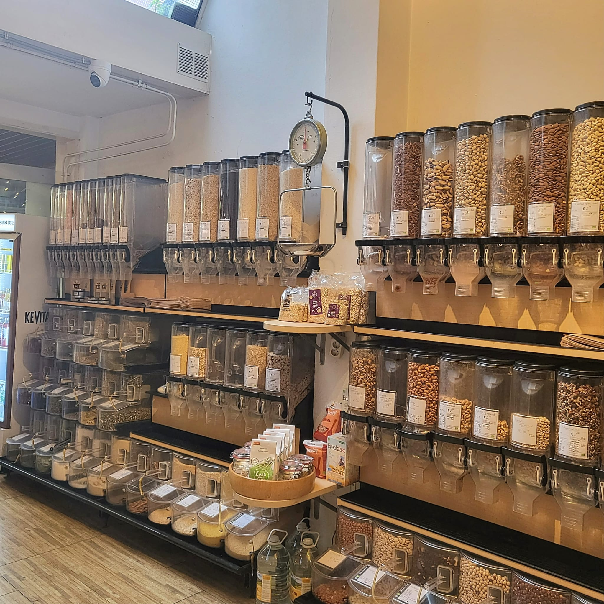
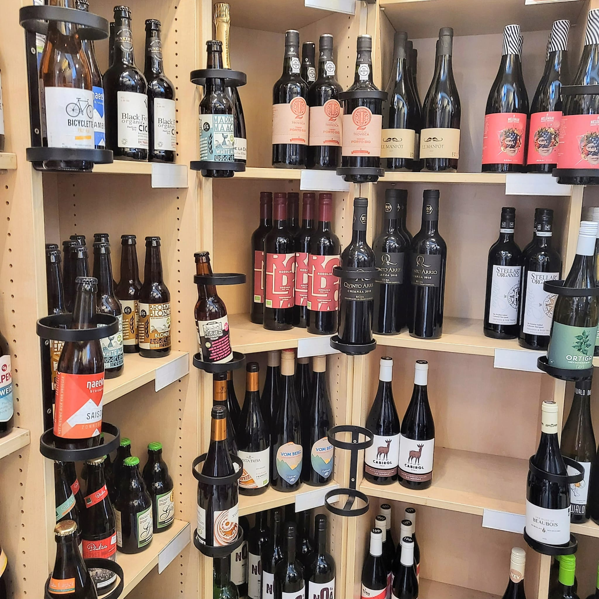
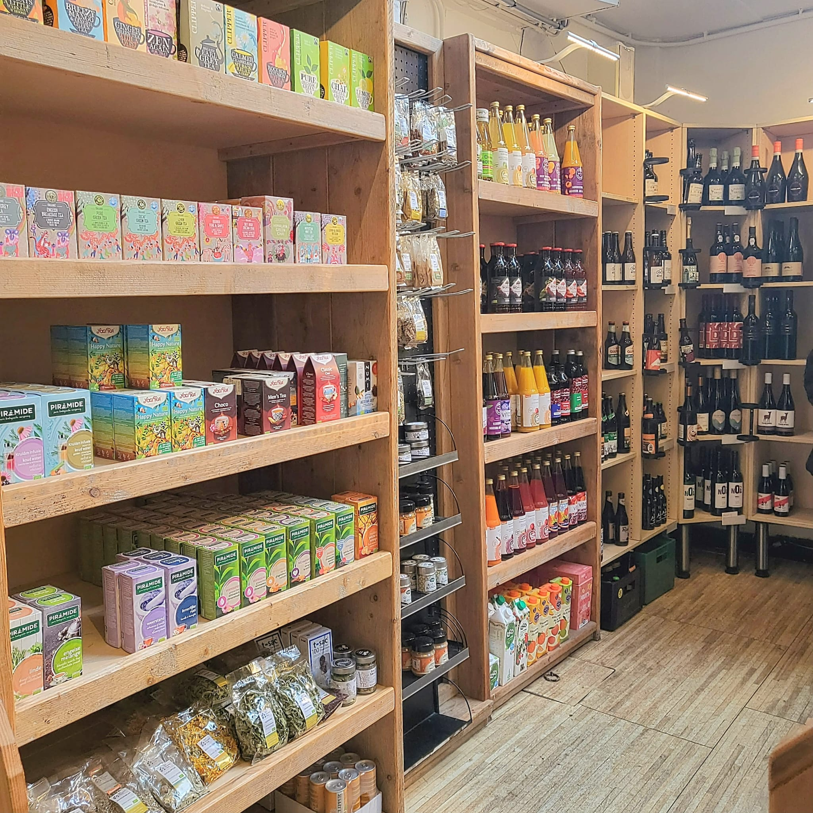
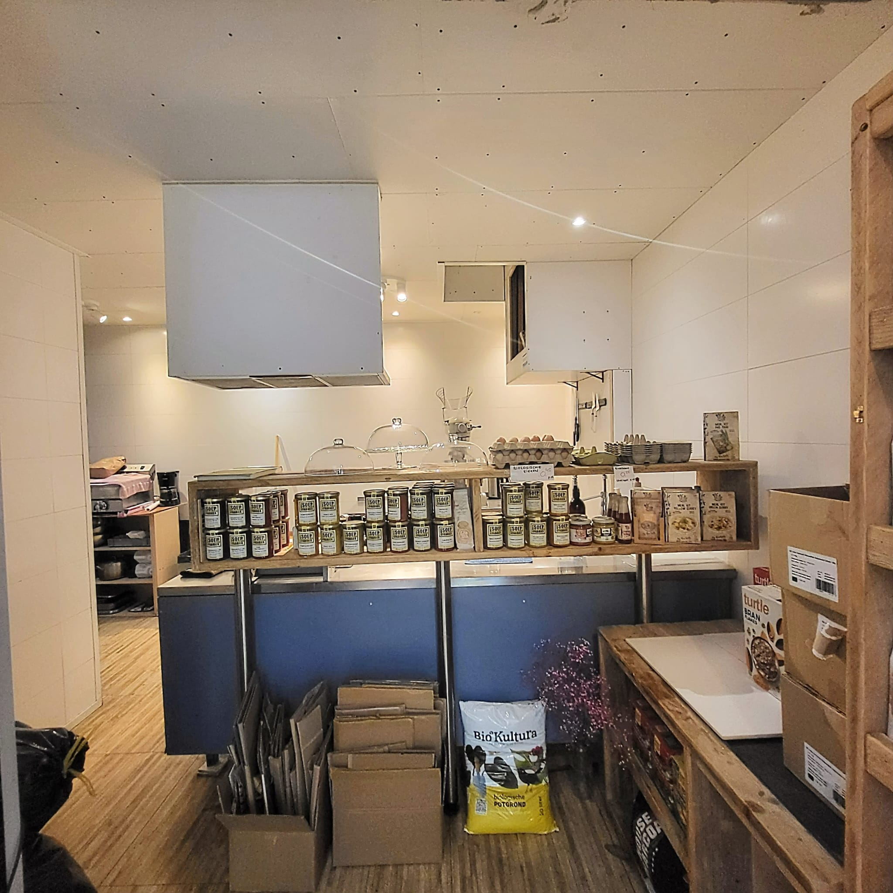
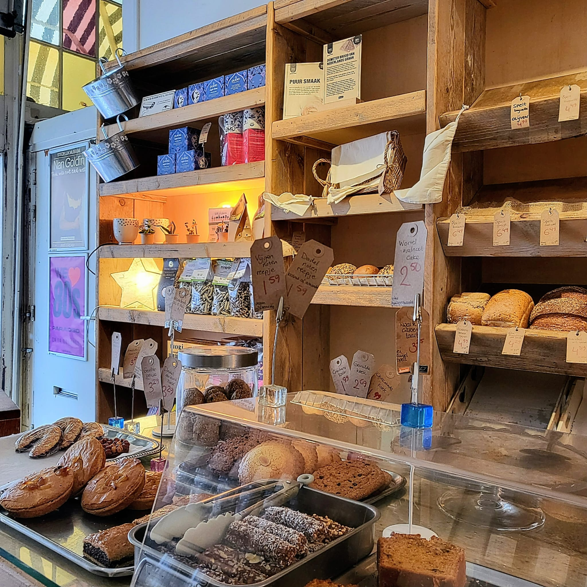
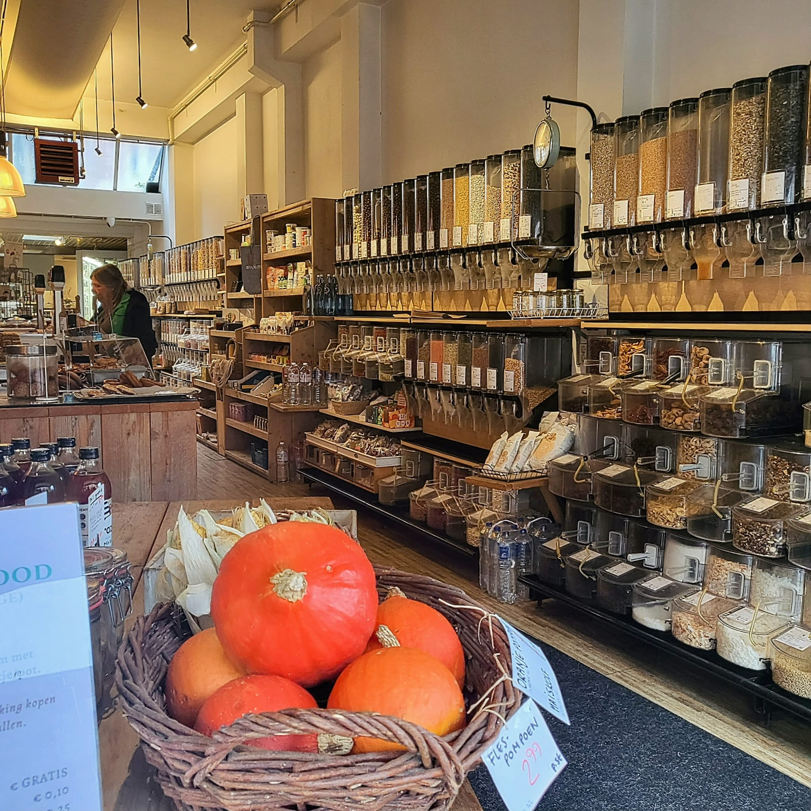

Een kijkje door Delicious Food
Delicious Food is een speciale biologische supermarkt en delicatessenwinkel. In de winkel vind je volop biologisch voedsel, ingrediënten, wijnen en bieren. Elke dag worden er verse producten rechtstreeks uit de keuken aangeboden. Je kunt zelfs je eigen ingrediënten tappen. Scroll gerust naar beneden om een kijkje te nemen in Delicious Food!
-

Hierboven zie je...
-

Voor de wijn liefhebbers...
-

Naast de wijn sectie bevindt zich ook een plek voor de thee liefhebbers.
-

Achterin de winkel bevindt zich de keuken.
-

Voorin de winkel vind je de brood en gebak sectie.
-

Zo zie je dat het niet alleen duurzaam, maar ook een knusse plek is.